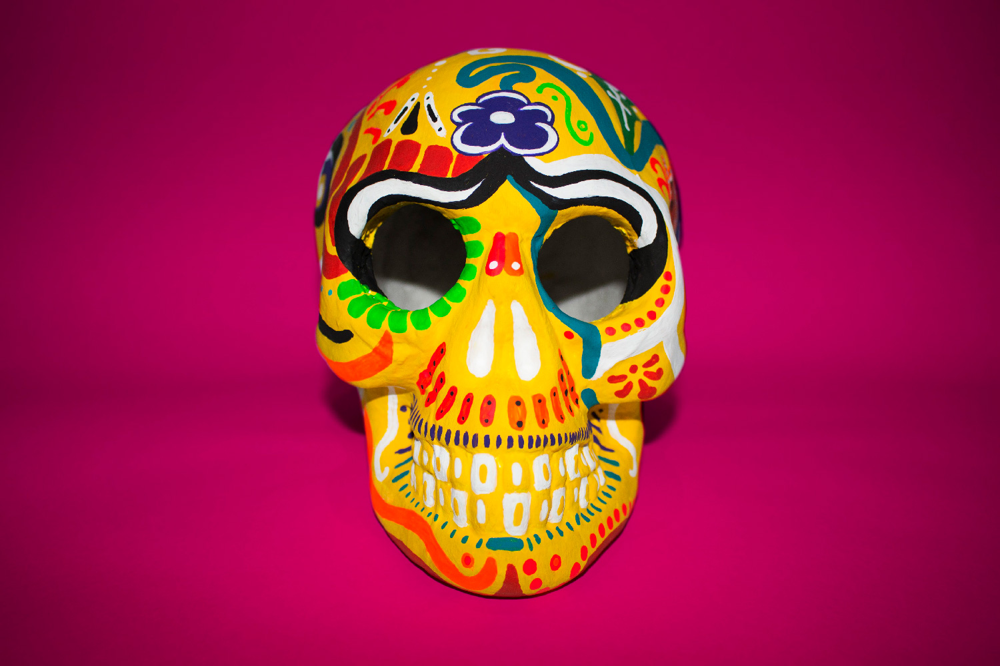

Día De Los Muertos
A series of hand painted sugar skulls used as promotional material for Día de Los Muertos, an annual mexican tradition celebrating the lives of those who have passed away. These photographs are intended to be used as postcards and additionally promotional material for the festival.
